Classroom presentation
Module 1: Drawing Foundations and Visual Communication
One editable eight-slide deck will teach this module's three named sections.
Download PowerPointModule 1
Use manual drawing systems to make ideas readable, comparable and ready for controlled digital development.
Three section packages · browser-local progress
Classroom presentation
One editable eight-slide deck will teach this module's three named sections.
Download PowerPointSection 01
Separate general risk thinking from local instructions, then match drawing instruments and line types to their communication jobs.
Theory
Graphics is about communicating ideas clearly. A drawing is not simply a picture of an object; it can show shape, size, position, construction, features and other information that another person needs to understand. In this course, you will learn to create and interpret both sketches and more controlled instrument drawings.
Before developing those skills, you need three foundations: working safely, choosing suitable drawing tools, and understanding that different lines can communicate different information. These foundations apply whether you later work with manual drawing methods, digital tools or a combination of both.
WHS means work health and safety. In graphics, WHS involves thinking about how you work with physical and digital production tools and making decisions that reduce the chance of harm.
A hazard is something with the potential to cause harm. A risk is the possibility that harm could occur when you are exposed to a hazard, together with consideration of how serious the consequences could be. These ideas are connected, but they are not the same thing.
Safe work is therefore more than memorising a list of rules. It is an ongoing process of noticing what is happening, considering possible risks and responding appropriately. Before beginning a graphics task, you should understand the task, consider the equipment and resources involved and notice anything that is uncertain or could affect safe work. As the task changes, you continue making these judgements.
This matters because graphics projects can involve different physical and digital tools. The appropriate WHS practices depend on the activity and context. If you are uncertain about how something should be used or how a task should proceed, the sensible response is to pause and check the current instruction rather than guess.
A useful way to think about safe graphics practice is:
notice → consider the risk → check what is required → act appropriately → keep monitoring
This process continues while you work. Something that seemed straightforward at the beginning of a task may need to be reconsidered if the equipment, workspace or activity changes.
Graphics uses equipment and resources to help people produce accurate and understandable visual communication. An instrument drawing is a drawing produced using appropriate drawing equipment or techniques to create controlled lines and geometry. It differs from a freehand sketch because the drawing process uses instruments to help establish features such as straightness, angles, circles or measured positions.
The important idea is not to memorise a shopping list of equipment. Instead, learn to ask:
What communication job needs to be done, and what type of tool will help me do it?
For example, one tool category might help create controlled straight lines. Another might help establish or transfer angles. Another might be selected for circles or arcs. Measuring tools can support decisions about size and position. Mark-making tools can be chosen to produce lines with suitable visual qualities.
The choice should follow the drawing task.
This means that having more tools does not automatically produce a better drawing. A well-selected tool has a purpose. As your skills develop, you will learn to identify and select appropriate equipment and resources for different graphics projects.
Tool choice also connects to safe practice. Before using an unfamiliar tool or process, make sure you understand its purpose and the current instructions for using it. Do not improvise a method simply because a tool appears capable of doing something.
Good graphics practice combines purpose, control and judgement.
A technical drawing needs to be read by someone else. If every line looks identical, the reader may have difficulty deciding what each part of the drawing means. This is why graphics uses different line qualities and conventions.
A convention is an agreed way of representing or organising information so that it can be interpreted consistently. Graphics conventions can apply to lines as well as other features of a drawing.
A construction line is a lightly produced working line used to help establish geometry, positions or relationships while a drawing is being developed. It supports the construction of the drawing rather than representing the main finished edge of the object.
A visible outline represents an edge or boundary that is intended to be clearly visible in the represented view. It needs to be visually distinguishable from supporting construction work.
An annotation is written or symbolic information added to a drawing to help explain it. Annotations can provide information that the shape alone does not communicate clearly.
Think of these features as parts of a visual language. Their differences help a reader answer questions such as:
Which lines describe the object?
Which lines helped construct the drawing?
Which information explains or identifies something?
Which features should attract the reader's attention?
Line quality can involve characteristics such as thickness, darkness or pattern. The aim is not decoration. The aim is to create meaningful visual differences.
Technical graphics does not rely entirely on personal preference. Drawing systems use established conventions and relevant standards so information can be communicated consistently. As you progress, you will encounter conventions for areas such as page layouts, projection, scales, measurement and different types of technical drawings.
Standards such as AS 1100 are relevant to technical drawing contexts. However, knowing that a standard exists is not the same as knowing all of its current requirements.
You should therefore avoid claims such as, “This page is standards-compliant” simply because it looks like another technical drawing or uses familiar features. A border, title area, line style or template does not prove compliance by itself.
The safer and more accurate approach is to distinguish between what you can observe and what would need to be checked.
For example, you may be able to say:
“The drawing uses visually different lines for different purposes.”
That is an observation.
A claim that those lines meet every relevant requirement of a particular standard is stronger. That claim would require the appropriate current information to support it.
This boundary matters throughout Communication Technology: use conventions deliberately, learn the relevant standards as they are introduced, and do not claim more than the available evidence allows.
Imagine that Mia is preparing to produce a paper-based instrument drawing of a simple fictional object.
She begins by thinking about the communication task. Her drawing needs controlled straight geometry, some measured positions, a circular feature and clear differences between working lines and the finished object.
Before starting, Mia looks at her workstation. She notices something she is uncertain about in the way the task has been set up. Rather than assuming that it is fine or inventing her own rule, she pauses and checks the current instruction. Once the uncertainty is resolved, she continues.
Next, she chooses tools according to their jobs. She selects a suitable measuring tool category for establishing sizes and positions, a straight-line drawing category for controlled straight geometry, and a circle or arc construction category for the circular feature. She also considers the mark-making qualities needed for the drawing.
Mia then plans her line language before producing the finished drawing.
She wants her temporary geometric construction to remain visually separate from the object's visible edges. She therefore decides that her construction lines and visible outlines must have clearly different visual qualities. If she adds explanatory information, she will position the annotation so that it helps the reader without confusing it with the object's geometry.
Notice what Mia has not done. She has not chosen tools simply because they were available. She has not guessed when she encountered uncertainty. She has not made every line identical. She has also not claimed that her page automatically complies with a technical standard.
Instead, she has followed a useful graphics process:
understand the task → notice risk or uncertainty → check → select tools by purpose → plan the line language → draw → review the communication
Vocabulary recap
WHS: work health and safety; practices and judgements used to support safe work.
Hazard: something with the potential to cause harm.
Risk: the possibility and potential consequence of harm occurring through exposure to a hazard.
Instrument drawing: controlled drawing produced using appropriate drawing instruments or techniques.
Construction line: a working line used to establish geometry, position or relationships.
Visible outline: a line representing an edge or boundary intended to be visible in the represented view.
Annotation: written or symbolic information added to help explain a drawing.
Convention: an agreed way of representing or organising graphical information.
These foundations will carry into the next graphics skills you develop. You will use freehand sketching to explore and communicate ideas, rendering to strengthen the visual representation of form and surfaces, and geometric construction to create controlled shapes and relationships. In each case, the same principle remains: make deliberate choices so that your graphics are safe to produce, purposeful and clear to read.
Purposeful visuals
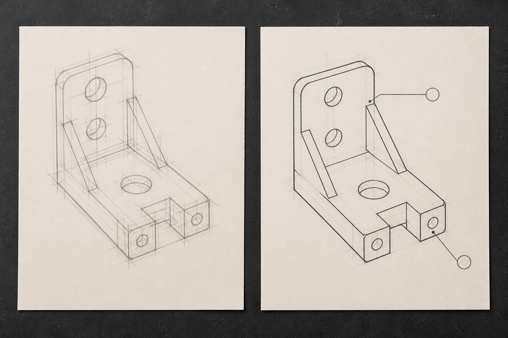
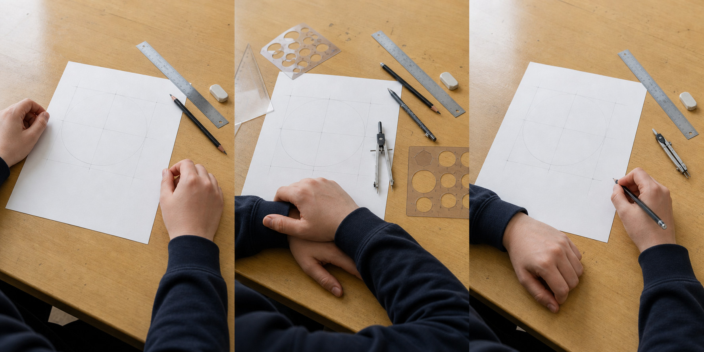
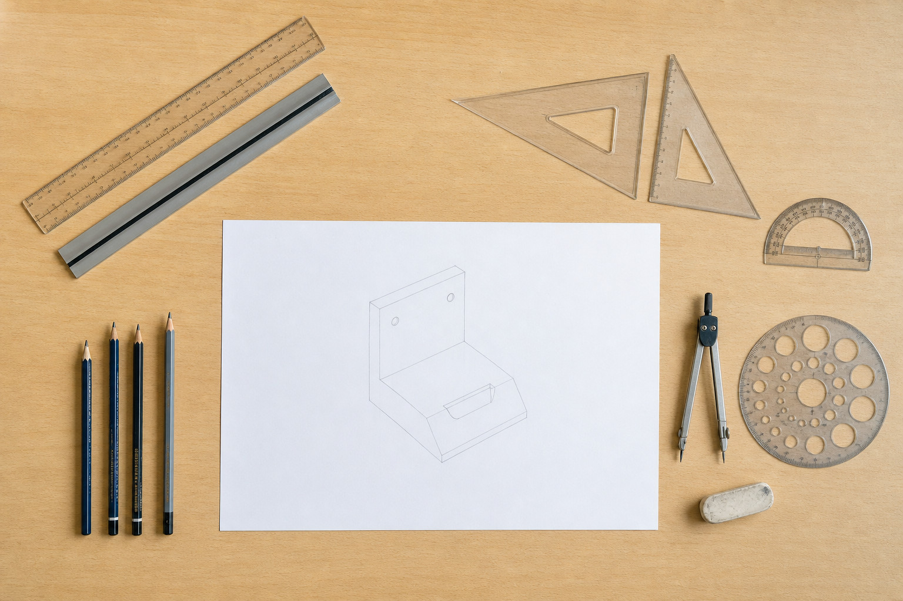
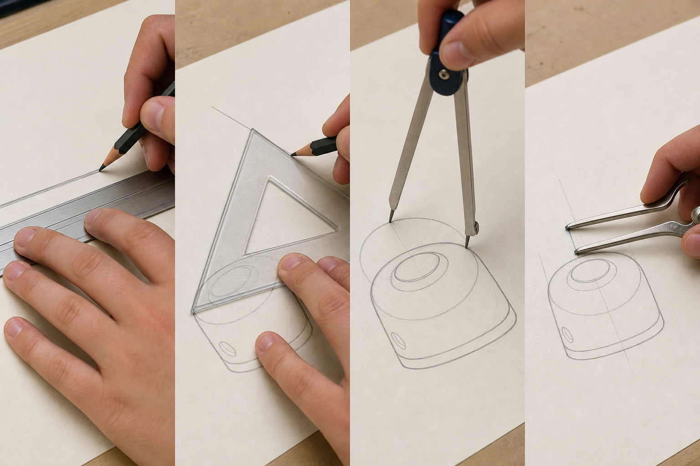
Media pathway
Watch or read for: No video assigned. Reading focus: Which information communicates a general risk-management principle, and which detail would still require the teacher's local instruction?
Use the reading and still-image pathway below; no video is required for this section.
Primary source: Communication Technology 7-10 Syllabus (2025) - Graphics principles and project management. Return to the theory explanation.
Applied Learning Activity
Rehearse the distinction between communication conventions and local safety directions.
Open the full activityFormative learning evidence
This browser-local record is not formal submission or teacher verification.
Higher-order capstone · justify
Section 02
Move from exploratory sketching to controlled construction and rendering that explains form.
Theory
Graphics is not only about producing a neat final drawing. Drawing can also help you think. Early sketches allow you to explore possibilities quickly, compare alternatives and develop an idea before committing to a more controlled representation.
An exploratory sketch is a quick drawing used to investigate what something might look like. It does not need to show every detail. Its main purpose is to make an idea visible so that it can be considered, discussed and changed.
A useful starting point is often a thumbnail. A thumbnail is a small, quick sketch that captures the main shape or arrangement of an idea. Designers can produce several thumbnails rather than trying to make the first idea perfect. Each thumbnail might explore a different overall form, arrangement or relationship between parts.
When sketching, pay attention to proportion. Proportion describes the size relationship between different parts of an object. A sketch can communicate an idea even when it has no dimensions, but the parts should still look reasonably related to one another. If one part changes size, you should consider how that affects the appearance and balance of the whole form.
The value of several thumbnails is that they create choices. Instead of deciding that the first idea is automatically the best, you can ask:
Which form communicates the intended idea most clearly?
Which parts of each idea are worth keeping or changing?
Does the overall form appear balanced?
Is symmetry important, or would an asymmetrical form communicate the idea better?
An exploratory sketch can communicate shape, proportion and design intention, but it has limits. A quick sketch does not automatically prove that curves are geometrically accurate, that two sides are truly symmetrical or that features are positioned precisely. Those questions require greater control.
Visual observation: Imagine three small thumbnail sketches of the same handheld product form: one narrow and angular, one broad and rounded, and one combining a rounded main body with a more defined end. What useful design information could you compare from these thumbnails, and what geometric information would still be uncertain?
Once an idea has been explored, parts of the drawing may need to become more controlled. Geometric construction uses geometric relationships to establish shapes, positions and connections logically rather than relying only on what looks right by eye.
A centre line is a reference line that identifies the centre of a form or feature. It is especially useful when constructing a symmetrical object because it provides a fixed reference for comparing one side with the other.
To bisect something means to divide it into two equal parts. For example, identifying the halfway position across a form can help locate a centre line. This matters when equal relationships need to be established rather than guessed.
Symmetry occurs when corresponding parts are arranged evenly about an axis or centre. In a front-facing symmetrical form, a centre line can act as the axis. Key points or features can then be positioned in relation to that line. This gives the drawing a clearer geometric structure.
Curves also need careful relationships. A tangent is a straight line or curve that meets another curve smoothly at a particular point without creating an unwanted corner or sudden change in direction. Tangency is useful when a form is intended to flow smoothly from one part into another.
These ideas work together as construction logic. Instead of drawing a complete outline immediately, you might:
establish the overall position and proportion of the form;
identify a centre line;
locate important reference points relative to that centre;
construct corresponding features where symmetry is intended;
establish curves and transitions carefully;
strengthen the final outline only after the underlying relationships make sense.
Construction lines are therefore part of the reasoning behind the drawing. They help answer questions such as: Where is the centre? Which features correspond? Where does this curve begin to change? Should these parts meet smoothly?
A controlled geometric drawing can provide stronger evidence of intended relationships than a quick sketch. However, it still cannot communicate everything. An accurate outline may tell you a great deal about shape and organisation while saying little about how the form appears as a three-dimensional object under light.
Rendering is the use of visual techniques to communicate the appearance and three-dimensional form of an object more clearly. Rather than changing the geometry of the object, rendering adds information that helps a viewer interpret surfaces, depth and form.
A simple outline tells you where the visible edges are. A rendering can help explain what happens between those edges.
Three useful ideas are highlight, shade and cast shadow.
A highlight is an area that appears relatively light because it is strongly exposed to the chosen light direction. Highlights can help a curved surface appear rounded rather than flat.
Shade is the darker appearance on parts of the object that receive less direct light. On a rounded form, a gradual change from lighter to darker areas can communicate curvature. On a more angular form, the change may appear more clearly between different faces.
A cast shadow is different from shade on the object itself. It is the shadow produced when the object blocks light from reaching another surface. Its position should therefore relate to both the object and the direction of the light.
Rendering is most useful when it explains the form rather than decorating the page. Adding random dark areas may make a drawing look more finished, but it does not necessarily make it more informative. The viewer should be able to connect the rendering to the geometry already established.
This creates an important distinction:
Sketching explores an idea. Geometric construction controls relationships. Rendering explains the appearance of the form.
Each stage adds different information. A highly polished rendering cannot replace weak geometric thinking underneath it, just as an accurate construction does not automatically show how the object will appear in three dimensions.
Rendering becomes more convincing when all of its light and dark information follows one clear idea about where the light is coming from.
Imagine that the light is coming from above and to the left of a drawn object. Surfaces facing that direction would generally receive more light. Surfaces turning away would generally become darker. A cast shadow would need to appear in a position consistent with the object blocking that same light.
This is light consistency. You do not need to simulate every physical effect of light. At this stage, the important idea is that your visual decisions should agree with one another.
For example, suppose a rounded product form has a strong highlight on its upper-left area. If the lower-right area gradually becomes darker, those two pieces of information support the same lighting explanation. If the cast shadow also falls away from the chosen light direction, the viewer receives a consistent message about the form.
Problems occur when the clues contradict each other. A highlight might suggest light from the left while the shading suggests light from the right. A cast shadow might point in a direction that does not agree with either. Individually, each effect may look acceptable, but together they weaken the communication.
Visual observation: Compare two renderings of the same controlled outline. In the first, the highlight, shaded area and cast shadow all agree with light coming from one direction. In the second, the highlight and shadow suggest different light directions. Which drawing communicates the form more clearly, and what evidence in the drawing supports your judgement?
Consistency matters more than adding lots of effects. A simple rendering governed by one understandable light direction can communicate more effectively than a complicated rendering containing contradictory visual information.
Consider a fictional handheld product form. The aim here is not to design a particular manufactured product. It is to follow how graphical information develops from an early idea into a clearer representation.
The first stage is a set of thumbnails. Several small sketches explore different possibilities. One is long and narrow with mostly straight edges. Another is shorter with a strongly rounded outline. A third combines a balanced central body with smooth transitions towards each end.
At this stage, the drawings communicate alternative ideas quickly. They allow the overall proportions and character of each form to be compared. They do not yet prove that corresponding sides are symmetrical, that curves are controlled or that smooth transitions are genuinely tangent.
The third thumbnail is selected for further development because its main form is clear and its balanced arrangement suits a symmetrical treatment. This is a reasoned choice: the decision is linked to visible features of the sketch rather than simply saying, “I like this one.”
Next, the selected idea is redrawn using construction logic. A centre line establishes the axis of symmetry. The main width relationships are considered about this centre rather than drawn independently on each side. Important positions are established before the final outline is strengthened. Where curved sections flow into other parts of the outline, their transitions are checked so they appear smooth rather than accidentally kinked.
The controlled outline now communicates the intended geometry much more clearly. Compared with the thumbnail, it provides stronger evidence of symmetry, proportion and deliberate curve relationships. However, it still does not fully explain the three-dimensional character of the surfaces.
The final stage is rendering. One light direction is chosen and maintained. The area facing the light receives a highlight. As the rounded form turns away from the light, it moves into shade. A cast shadow is positioned so that it agrees with the same lighting decision.
Now compare the whole progression.
The thumbnail stage communicates possibilities and supports quick comparison, but it cannot establish precise geometric relationships.
The controlled construction stage communicates intended shape, symmetry and geometric relationships more reliably, but an outline alone provides limited information about surface form under light.
The rendered stage communicates three-dimensional appearance more strongly by adding consistent light, shade and shadow. It does not, however, replace the need for the underlying construction or provide all the technical information needed to define an object completely.
The key vocabulary describes decisions at each stage: a thumbnail quickly explores an idea; proportion compares relative sizes; a centre line establishes a central reference; to bisect is to divide equally; symmetry describes corresponding relationships about an axis or centre; a tangent relationship creates a smooth meeting; rendering communicates appearance and form; a highlight indicates stronger exposure to light; shade shows areas receiving less direct light; and a cast shadow is created where the object blocks light from another surface.
A useful decision sequence is therefore:
Explore → compare → choose → construct → check → render.
These drawings communicate progressively more information, but even a convincing rendered view cannot define every feature needed to describe an object precisely. The next step is to investigate projected views and dimensioning, where graphics are organised to communicate shape, position and size in a more precise technical form.
Purposeful visuals
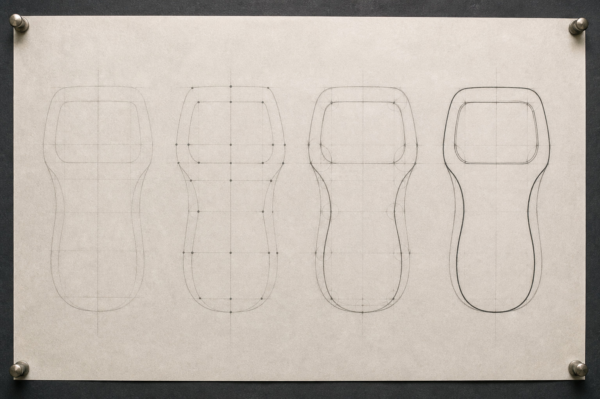
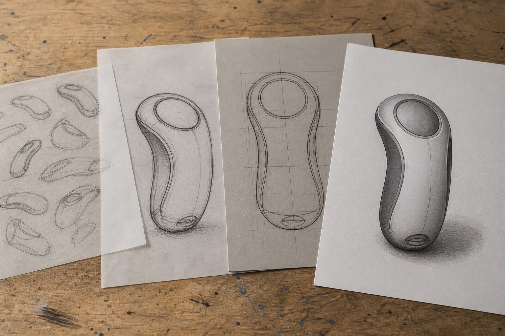
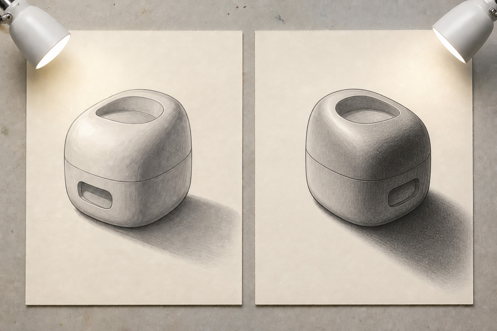
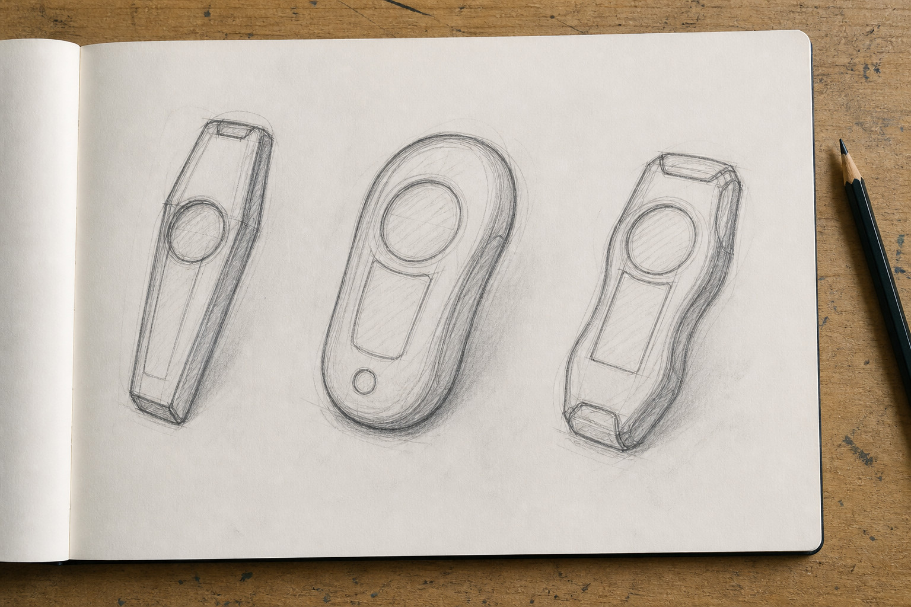
Media pathway
Watch or read for: No video assigned. Still-image focus: What changes when a loose idea sketch becomes constructed geometry, and what extra information does rendering add?
Use the reading and still-image pathway below; no video is required for this section.
Primary source: Communication Technology 7-10 Syllabus (2025) - Drawing systems core. Return to the theory explanation.
Applied Learning Activity
Connect each drawing stage to a clear decision or communication job.
Open the full activityFormative learning evidence
This browser-local record is not formal submission or teacher verification.
Higher-order capstone · justify
Section 03
Choose views and dimensions that communicate the required information without claiming unverified local standards settings.
Theory
Imagine placing a simple object on a table and looking straight at it from the front. You can see its height and width, but some information about its depth is difficult or impossible to judge. Now move directly above it. The object has not changed, but the information you can see has. Move to one side and another part of its shape becomes clear.
Technical drawing uses this idea deliberately. Instead of trying to show everything in one picture, a drawing can show the same object from several carefully chosen directions. The front, top and side views are coordinated views of one object, not three separate shapes.
An orthogonal drawing represents an object using views taken square-on to its main faces. Each view removes the visual effect of perspective so that features can be compared and measured clearly. NESA includes orthogonal and pictorial drawings as important drawing systems used to communicate graphical information. NSW Curriculum +1
A principal view is one of the main views used to describe the object, such as the front, top or side. The front view should normally be chosen because it communicates useful information about the object's shape and important features. It is not simply whichever face happens to be closest to you.
Spatial reasoning comes from connecting the views. If a vertical edge appears at a particular position in the front view, ask where that same physical edge should appear in another view. If a step changes height in the front view, what evidence of that step should appear from above? Reading an orthogonal drawing means mentally rebuilding the single 3D object represented by its separate 2D views.
Read the drawing — Visual 1: Trace one corner of the object through the front, top and side views. What changes about its appearance, and what stays aligned?
The organised relationship between views is created by projection. In this context, projection means transferring the position of features from one view to another so that the views remain geometrically connected.
Think of imaginary straight lines extending from important corners and edges. These projection lines help establish where the same features belong in neighbouring views. A feature should not drift sideways or change position simply because you have moved to another view.
Two recognised arrangements are first-angle projection and third-angle projection. Both communicate an object through related views, but they use different rules for where those views are placed on the drawing sheet. NESA specifically identifies first-angle and third-angle projection and the use of projection symbols as part of orthogonal drawing. NSW Curriculum
The important point is not to memorise a view position without context. Check the verified projection symbol or drawing template first. That tells you which projection system controls the placement of the views. Once the system is known, apply it consistently.
In Onshape drawings, the projection arrangement can depend on the selected drawing standard or a custom template, and the projection setting can also be changed. This is why you should verify the required drawing setup rather than assume that software settings automatically satisfy a particular drawing standard. Onshape
When reading any set of working views, use alignment as evidence. Related widths, heights, edges and features should agree between views. If they do not, something needs checking.
Read the drawing — Visual 2: Look at the projection symbol first. Then identify the front, top and side views and follow one shared feature between them. Does its placement make spatial sense?
Sometimes you need to understand an object's overall 3D form quickly. At other times you need precise information about its individual faces and features. One drawing type does not have to do both jobs.
A pictorial drawing shows several dimensions of an object together so that the object appears three-dimensional. An isometric drawing is a type of pictorial drawing that represents three main directions in a consistent geometric arrangement. It is particularly useful for helping a reader visualise the object's overall form.
An isometric view might allow you to recognise a stepped object almost immediately because you can see its width, depth and changing height together.
A set of orthogonal working views has a different communication purpose. Each view isolates particular information. The front might communicate heights clearly, the top might reveal depth and plan shape, and the side might clarify another relationship that is difficult to read elsewhere.
So the question is not, "Which drawing is better?" It is, "What information am I trying to communicate?"
NESA includes both orthogonal and pictorial drawing and expects students to interpret working drawings and produce 3D views from graphical information. NSW Curriculum Onshape likewise allows drawing views to be created in orientations including front, top, left, right and isometric. Onshape
Use an isometric view as strong spatial support, but do not let its easy-to-understand appearance replace the coordinated information available from working views.
Correctly shaped views can still leave a major question unanswered: how large is the object?
A dimension is numerical information that communicates a required size or location on a drawing. Dimensions turn graphical shapes into measurable information.
Good dimensioning is therefore an information-selection problem. The aim is not to cover a drawing with every measurement you can think of. The reader needs a minimal complete set: enough information to understand the necessary sizes and positions without unnecessary repetition.
Suppose an object's overall width has already been clearly dimensioned in the front view. Repeating that same overall width elsewhere may add no useful information. That is duplication.
The opposite problem is omission. Imagine showing the overall height of a stepped object but giving no information that establishes the height of the lower step. The drawing contains a visible feature whose size cannot be determined completely.
When checking dimensions, ask:
Can the important overall sizes be determined?
Can the sizes and positions of significant features be determined?
Has the same information been repeated without a clear reason?
Is any visible feature still impossible to define?
Onshape provides drawing dimension tools for adding dimensional information to drawing views. The software can help place and manage dimensions, but the designer still needs to decide which information actually communicates the object clearly. Onshape
Read the drawing — Visual 3: Cover the isometric view and try to reconstruct the object from the dimensioned working views. Which dimensions are essential, which are duplicated, and is anything missing?
Consider a fictional solid block with a rectangular footprint and two height levels. One end is low and the other is raised, creating a clear step across the object.
1. Choose an informative front view. Imagine rotating the block. From one direction it might appear almost rectangular, hiding the change in height. From another direction the stepped profile is obvious. The second direction is more informative, so choose it as the front. The aim is to communicate the object's form clearly.
2. Project shared features. Draw the front view and identify its major corners, edges and change in height. Now consider the top view. The overall width seen in the front must agree with the corresponding width in the top. The position of the step must also correspond to the same physical feature. Use projection to carry these relationships between views rather than guessing where features belong.
3. Check alignment. Compare the views as a set. If the step begins at one position in the front but appears at an unrelated position in another view, investigate the mismatch. Ask, Could these two views really belong to the same object? Alignment is one of your strongest checks.
4. Use the isometric view for spatial support. Now look at an isometric representation of the block. Its purpose here is to help connect the separate 2D shapes mentally. Find the lower portion, raised portion and step in the pictorial view, then locate those same features in the working views. Move back and forth between them until the relationship makes sense.
5. Select dimensions. Imagine the reader needs to determine the block's overall width, overall depth and overall height. Those dimensions establish its main size, but they do not necessarily define the step. The step may also require information establishing its position and its lower height.
Do not simply dimension every line. Ask what must be known to define the form completely.
Suppose the overall width appears in both the front and top views. Dimensioning it clearly once may be sufficient; adding the identical measurement again is likely duplication. But if the position of the step cannot be determined from any dimension, that is an omission even though the drawing may look complete.
The finished set should therefore combine three things: coordinated views that agree, dimensions that provide a minimal complete description, and a pictorial view when it genuinely helps the reader understand the 3D form.
Final checking routine
Before treating a drawing as complete, run this quick check:
Object → system → alignment → dimensions → readability.
Confirm that every view represents the same object. Check the verified projection symbol or template and make sure the views follow that system. Trace important features between views and check their alignment. Look for missing or unnecessarily duplicated dimensions. Finally, ask whether another person could reconstruct the intended form without guessing.
These same spatial ideas continue when you begin modelling in Onshape. A CAD model also starts by deciding where geometry belongs in space. You will work with sketch planes that establish where a sketch sits, then use constraints to control relationships between sketch elements. The habit you are developing now—thinking about position, alignment and relationships rather than treating lines as isolated marks—is exactly what will help you build accurate CAD geometry later. Onshape
Purposeful visuals
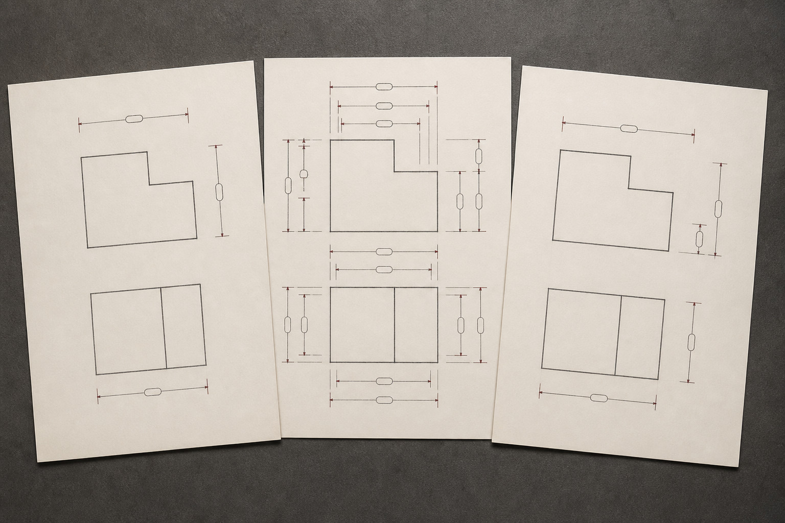
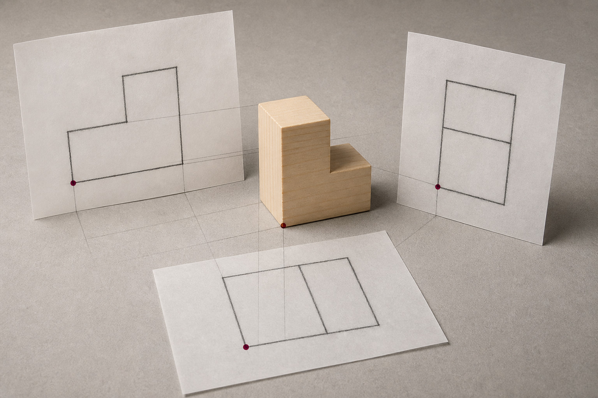
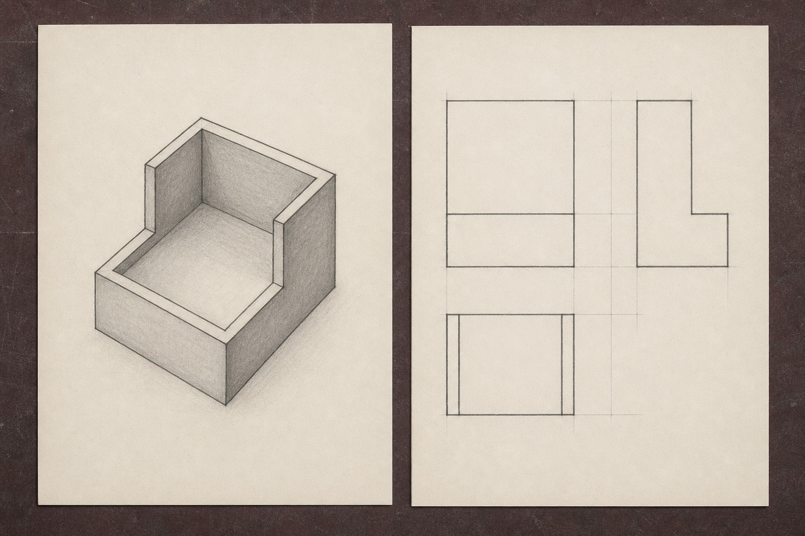
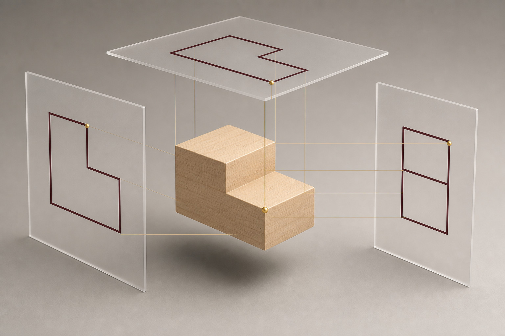
Media pathway
Watch or read for: Which dimension choice removes uncertainty for the reader, and what would become clutter if every possible measurement were added?
Use the reading and still-image pathway below; no video is required for this section.
Primary source: Drawing Dimensions. Return to the theory explanation.
Applied Learning Activity
Choose the representation that best reveals a stated feature.
Open the full activityFormative learning evidence
This browser-local record is not formal submission or teacher verification.
Higher-order capstone · justify
End-of-module review
Completion means the ten questions were checked and the capstone has text saved. It does not mean submission or a formal mark.